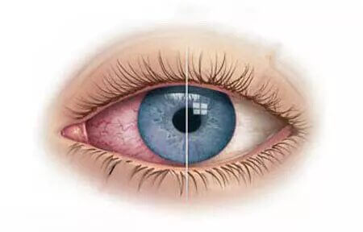

/
Científicos israelíes desarrollan un remedio para restaurar la
visión
Científicos israelíes han desarrollado un remedio para restaurar la visión que reemplazará la cirugía
Investigadores del Instituto de Nanotecnología Shaare Zedek han anunciado la finalización del trabajo en una nueva tecnología de corrección de la visión que se prevé que salve a la humanidad de las gafas.
Causas de la disminución de la visión
Todas las causas del deterioro de la visión se pueden dividir condicionalmente en tres grandes grupos:
- enfermedades directamente del órgano de la visión (córnea, lente, retina);
- patología de los tejidos oculares (incluidos los músculos del ojo, los tejidos blandos de la cuenca ocular, incluido el estrabismo);
- comorbilidades (otros órganos y sistemas).
Entre las enfermedades directamente del órgano de la visión, la causa más común de deterioro de la visión son las siguientes:
- deformidades de la lente o pérdida de su capacidad para cambiar su forma (miopía, hipermetropía, astigmatismo);
- esiones en el ojo (contusiones, quemaduras, incisiones, etc.);
- cataratas (opacificación de la lente);
- glaucoma (aumento de la presión intraocular);
- patología de la retina (desprendimiento, desgarros, maculodistrofia);
- belmo (opacidad corneal);
- queratitis (infecciosa, alérgica, autoinmune, tóxica);
- queratoconjuntivitis, etc.

Enfermedades de otros órganos y sistemas que pueden ir acompañadas de visión borrosa:
- diabetes mellitus (retinopatía diabética);
- adenoma hipofisario;
- tumores cerebrales;
- trastornos de la tiroides (bocio tóxico difuso, tumores);
- enfermedades de la columna vertebral (Osteocondrosis de la columna cervical, deformidades, lesiones, hernias intervertebrales, etc.);
- enfermedades infecciosas y venéreas;
- hipertensión (hemorragias retinianas, retinopatía).
Gafas y lentes-el camino directo a la ceguera
Cuando se usan ayudas para mejorar la visión (gafas, lentes de contacto), no es necesario enfocar los ojos a distancias que han sido problemáticas. Los músculos oculares no se tensan, pierden tono y se vuelven aún más débiles, y con el tiempo pueden atrofiarse.
Se produce (o se intensifica) el espasmo de acomodación, y con el tiempo la deformación de la lente se vuelve permanente.
Córnea dañada debido al uso prolongado de lentes de contacto
Se debe prestar especial atención a las lentes de contacto. Como cualquier otra técnica, la corrección de contacto tiene sus contraindicaciones.
Las lentes no elegidas crean condiciones para la queratitis, la inflamación de la córnea del ojo. La causa de estos problemas puede ser un cuerpo extraño atrapado entre el ojo y la lente. Incluso la mota de polvo más microscópica puede traer muchos problemas.
El uso prolongado de lentes o su intolerancia individual conduce al síndrome del ojo seco. Esto conduce a una intolerancia aguda a las lentes de contacto, ojos rojos, sensación de arena, ojos obstruidos, niebla. Junto con esto, se produce daño a la córnea, se produce una reacción alérgica a los excipientes y soluciones.
El uso continuo prolongado (más de 18 horas) de lentes causa una alteración de la microflora en la córnea y, posteriormente, amenaza con enfermedades graves.
Cataratas causadas por el uso prolongado de lentes de contacto
Las lentes de contacto pueden ser vectores de una infección ocular grave, queratitis por Acanthamoeba, que afecta el Revestimiento córneo del ojo y causa ceguera.
La estancia forzada en una habitación con gas, fumada o polvorienta también puede causar ceguera, ya que las lentes absorben muy rápidamente todos los olores y gases, lo que provoca irritación de la córnea.
Formas de restaurar la visión
Para restaurar la visión, en primer lugar, es necesario eliminar las causas que afectaron su disminución. Con la Génesis no establecida de la visión deficiente, tiene sentido cuidar la estabilización de la presión intraocular, el fortalecimiento de los músculos oculares y la formación de inmunidad local.
Para eliminar estas causas, se requiere una cierta dosis de vitaminas a las que se refiere:
- retinol-1 mg
- tiamina-2 mg
- riboflavina-1.8 mg
- piridoxina-2 mg
- cianocobalamina - 3 mcg
- vitamina e-15 mg
- vitamina C-90 mg
- ácido fólico-400 mcg
- zinc-3 mg
- luteína-15 mg
- zeaxantina-6 mg
La composición bioquímica de los oligoelementos responsables de la agudeza Visual deprime la acción de los demás, por lo que hasta ahora no era posible crear un complejo universal para restaurar la visión.
La ingesta separada de vitaminas no produce el resultado adecuado en el 89% de los casos, ya que los procesos metabólicos de cada persona ocurren individualmente, por lo que la mayoría absoluta de las personas tiene una tendencia a la baja digestibilidad de las vitaminas, tanto en los complejos de farmacias como en los productos.
Ceguera total causada por una infección ocular al usar lentes
Investigadores israelíes encontraron una salida y al comienzo de lanzaron un remedio que reemplazará incluso la corrección con láser en un futuro cercano. Se registró bajo el nombre comercial .
Que reemplazarán las gafas en un futuro próximo
ha combinado todo el complejo de vitaminas y minerales para restaurar la visión. La tecnología patentada para desarrollar el remedio permitió fabricar un complejo vitamínico en una forma BIO-DISPONIBLE, que se absorbe en la sangre durante 3-5 minutos. Como resultado, se produce la máxima absorción de las vitaminas resultantes.
Los científicos han pasado más de 7 años desarrollando . Otros 4 años pasaron para llevar a cabo experimentos clínicos, durante los cuales más de 100 miles de personas abandonaron permanentemente las gafas y lentes de contacto.
A EFICACIA SIN PRECEDENTES DE LA HERRAMIENTA SE DEBE A UNA COMPOSICIÓN QUE NO TIENE ANÁLOGOS, QUE INCLUÍA VITAMINA A, VITAMINA E, VITAMINA C, SELENO DE SODIO, SULFATO DE ZINC.
La vitamina A (retinol) tiene un efecto multifacético en el organismo humano. Es necesario para el crecimiento, desarrollo y renovación (regeneración) de los tejidos, manteniendo la actividad de las defensas inmunitarias, protegiendo frente a lesiones de la piel y mucosas, para asegurar la visión. La capacidad protectora del cuerpo, sus tejidos tegumentarios (piel, membranas mucosas) depende de la vitamina A. Por lo tanto, esta vitamina a menudo se denomina "la primera línea de defensa contra las enfermedades".
El selenio es un oligoelemento involucrado en la producción de glóbulos rojos, la actividad del selenio aumenta en presencia de otro antioxidante como la vitamina E.
La Vitamina C participa en la síntesis de componentes de la sustancia intercelular del tejido conectivo, que es responsable de hidratar el globo ocular. Su contenido suficiente aumenta la estabilidad de otras vitaminas: compuestos A, E y del grupo B.
La Vitamina E estimula la formación de nuevos capilares y mejora el tono, la permeabilidad vascular, mejora la circulación sanguínea en el globo ocular.
El método de extracción de agua fría jugó un papel importante en la creación de cápsulas, gracias al cual fue posible preservar la composición bioquímica de las vitaminas de tal manera que su absorción se llevó a cabo en su totalidad.
Las sustancias activas del remedio pueden elevar el nivel de vitaminas necesarias para la visión a una marca saludable para 2-4 semanas. Durante este tiempo, el equilibrio de los oligoelementos responsables de la agudeza Visual se iguala.
Esto conduce a la estabilización natural de la presión ocular y también tonifica los músculos del ojo, fortalece la retina y nivela la visión a uno.
Mi hija cortó la visión clara durante un mes y se quitó las lentes por completo.
Ayer recogí un paquete con . Entregado rápidamente, todo está bien. Estoy empezando a intentarlo.
Estoy haciendo mis ojos enfermos, ya la segunda semana bebo , ¡así que la visión realmente mejora! ¡Estoy tan contenta! Ugh 3 veces))
Buen artículo, gracias. Hecho el pedido, ahora estoy esperando el paquete :)
He estado tomando durante una semana y la visión ha mejorado de -4 a - 2!
¡Un mes tomó el curso con y la vista se convirtió en 1! ¡No tengo palabras!
Uso una semana y ya hay resultados. ¡La visión ha mejorado mucho! Trato de no usar gafas.
Logré con esta herramienta mejorar mi visión de -5 a -2 en 4 semanas. Y quiero una unidad)). Es cierto que a veces pereza y me pierdo u olvido comer una píldora.
Y yo soy la misma, siempre me olvido de tomar una pastilla. Pero aun así. la visión de ha mejorado. Era + 1.5, ahora es 0.8.
¡Felicidades, he recuperado completamente mi vista! ¡No puedo creerlo!!! Ayer revisé en el salón de gafas, ¡la visión es una UNIDAD! El esposo también comenzó a beber , aunque no tenía una visión tan pobre como yo.
Amigos, espero que os llegue la misma felicidad que a mí. Recuperé mi visión en 12 días de -2 a 0.8. Gracias al creador del remedio. ¡Buena suerte a todos!
Mi tía estaba tomando , acaba de terminar el curso. La visión con -3,5 se niveló a 1. Ni siquiera hay palabras, por mucho que toda la familia estemos felices por ella.
La droga es súper, y lo más importante, simple y rápida. Por artículo - 5 +++ ;) ayer fui Al oftalmólogo, se sorprendió por los resultados.
Gracias por el artículo. Como siempre muy útil. Voy a hacer un pedido.